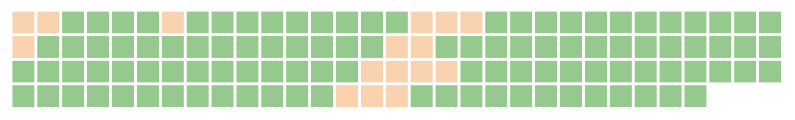
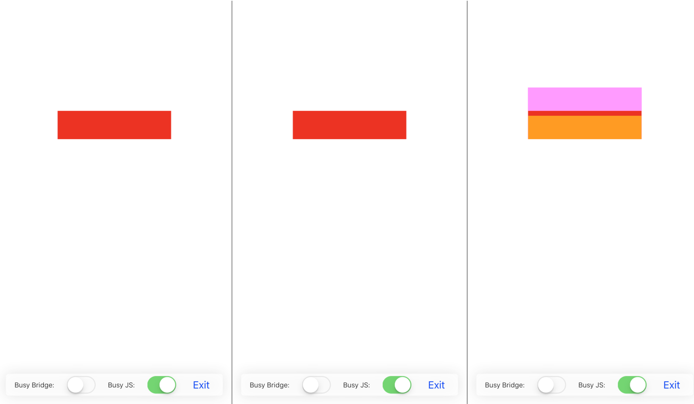

This article tries to find a formal answer (from the beginner's naive perspective) to questions such as:
"Does it feels as it should?",
"This UI framework performs better than another, does it?", or even
"After new update UX became slightly worse, or it is just for me?".
↓
FPS (frames per second) is probably the first metric what comes to mind when we try to measure the UI performance.
Video game players are very well aware of framerate differiences, game developers have beein using most sophisticated techniques
to achieve higher rates (espessially in VR).
Higher fps is usually desired target everywhere (except modern cinema industry which stuck at 24fps).
And it can be measured by internal developer tools in browsers and IDEs
15fps30fps60fps
Difference between 30fps and 60fps might be less noticable, you may need to watch clips multiple times to feel it.
15fps30fps60fps
For web and mobile interfaces target FPS usually is 60,
since most of the screens works on 60Hz refresh rate
(Hello, the new iPad and its 120Hz).
However, rendering might not be finished in time, leading to dropped frames.
That time can be calculated: 1 second / 60 frames ≈ 16.6ms per frame.
Basically, in such cases, the previous frame is displayed instead.
It's crucial when an app requires to present important layout changes for the visual feedback, but couldn't.
Framerate drops for a few frames and it got immediately noticed by user.
Dropped frames
Imagine an app: a simple box moving with linear speed from bottom to up.
Let's add an artificial JS buzz generator, which randomly freezes the JS thread for 2-4 frames.
You can notice lags in the movement.
We can capture screenshots of our app 60 times per seconds and create a sequence of snapshots.
This allows to compare two neighbor frames, pixel by pixel. Naive approach: If frame has changed pixels, we mark it as a green.

What do orange frames mean for a smooth move?
Breaking down our recorded video into individual frames:
This is how the segment of the sequence with dropped frame looks more closely, consisted of three frames:

Normally the box slightly moves to the desired direction by a few pixels every 16ms.
But when rendering is artificially freezed, the calculation for a position can't be done in time and the box stops moving at all.
And after freezing ends, the box jumps directly to the position according to timestamp. All of this combined produce the lag.
Latency is a response time between user interaction and the visual feedback.
It's more complicated to measure directly using the same approach,
but we can get the basic idea by analyzing the sequence too.
Work in progress
Videotape is a tool for capturing and analyzing frames sequence in order
to find UX performance regressions in your web and mobile apps.
It's an basic idea with a simple implementation to research the problem.
Videotape.app is a macOS only app roughly 4MB (half of size of which is an app icon)
with a thin node module wrapper for CLI management and distribution. You can install it with npm install videotape -g and use via command-line or GUI
if you're really willing to be an alpha tester.